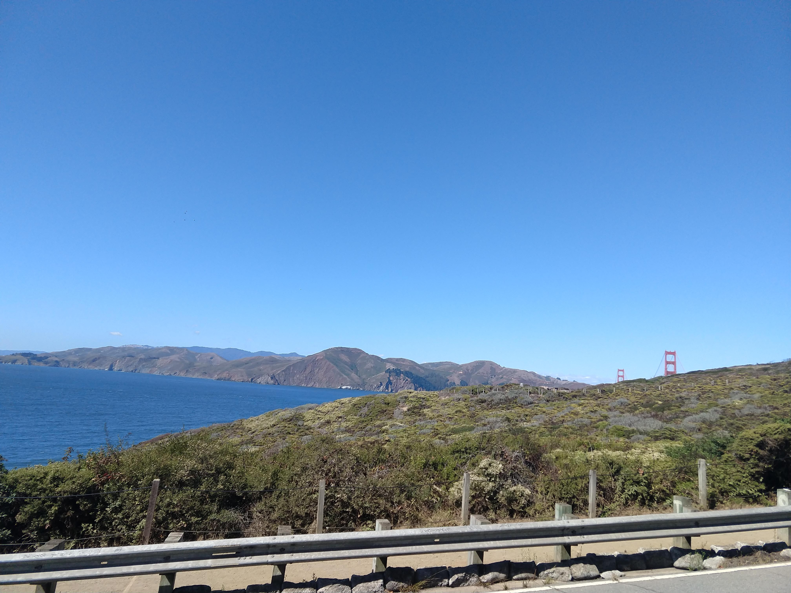
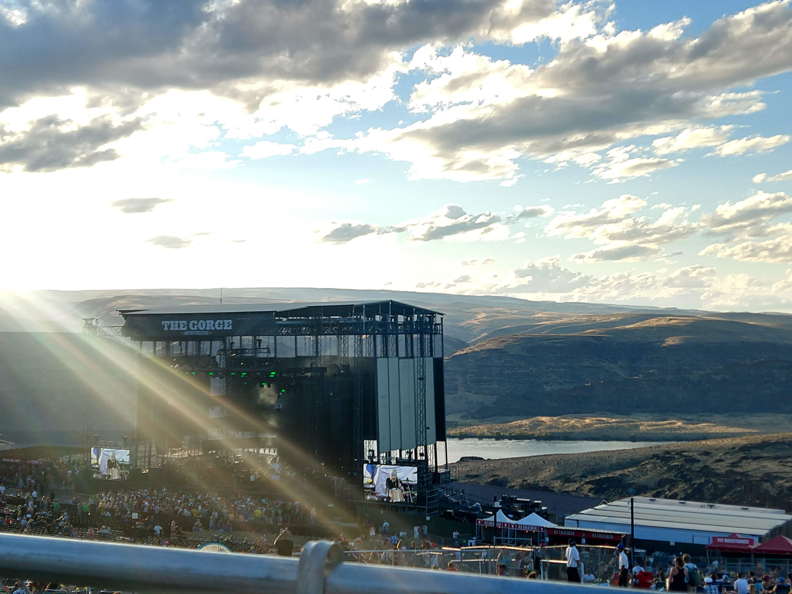
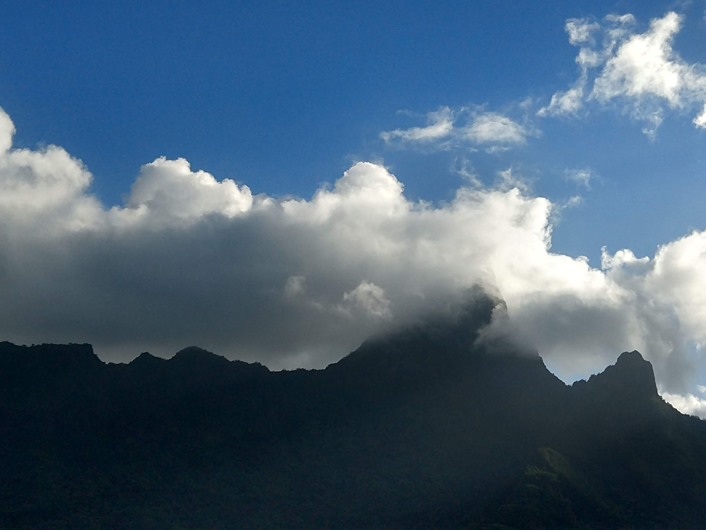
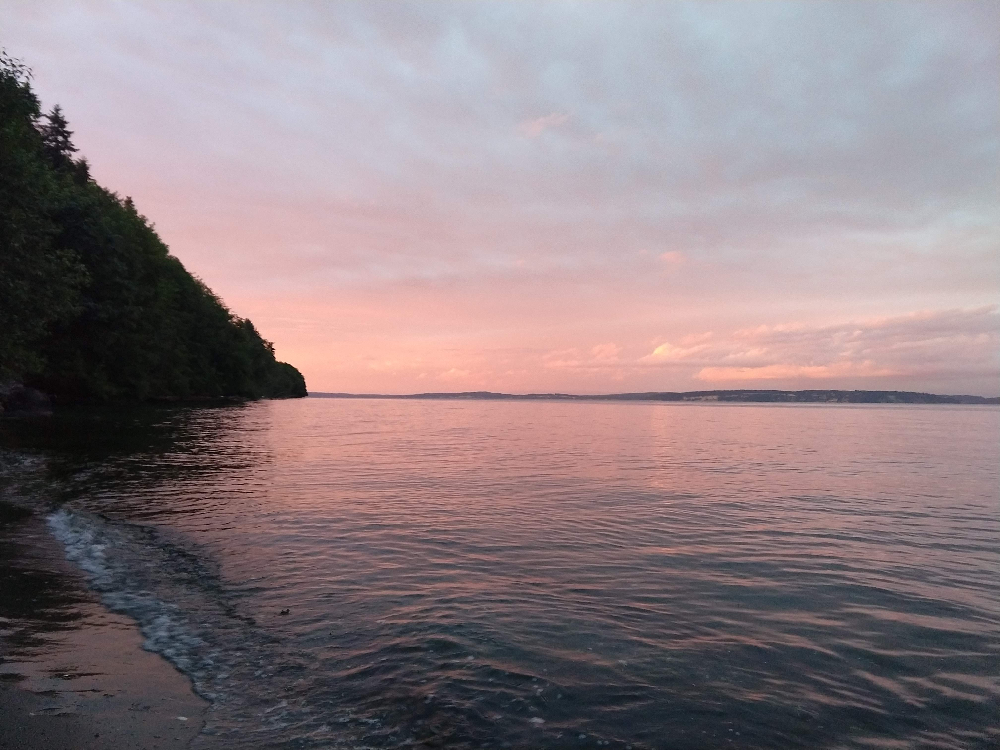
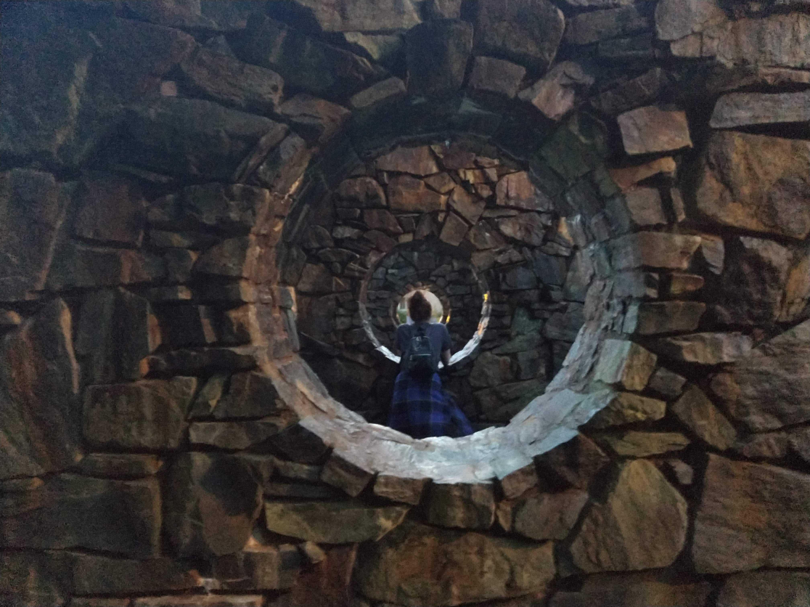
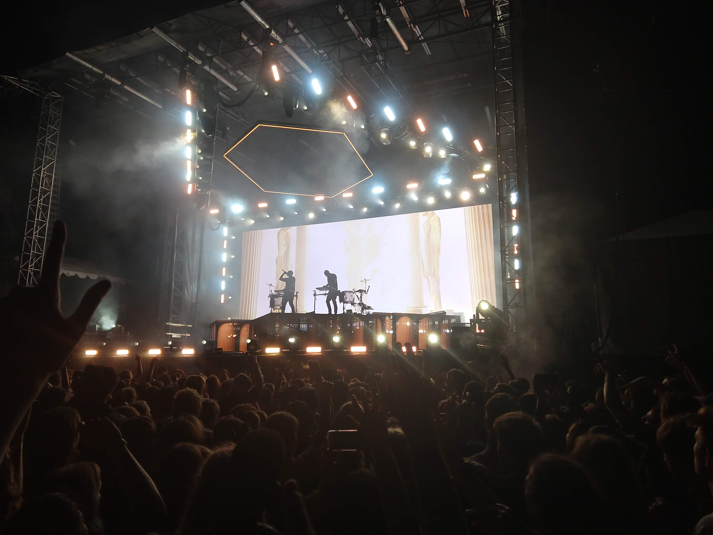
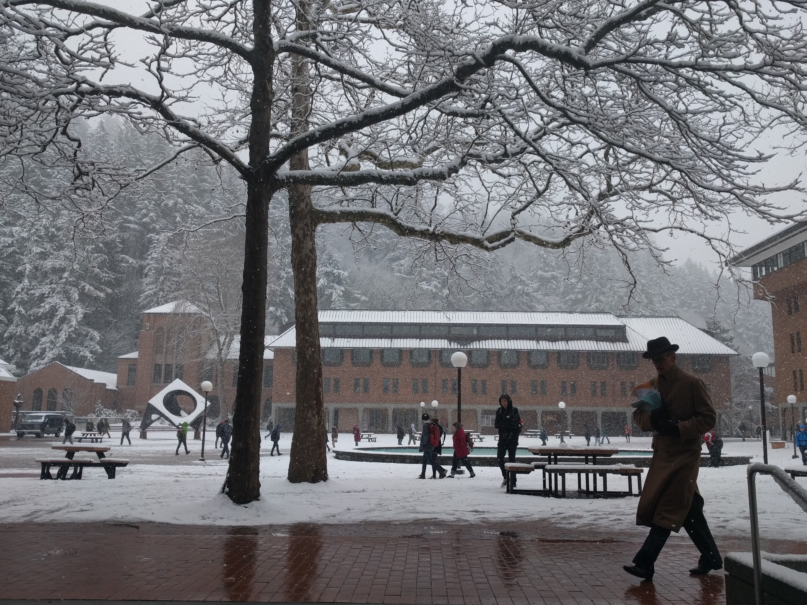

Introduction
Given that the instructions for this assignment were very open-ended, I struggled to find a way to represent myself. Eventually, I decided that pictures were the way to go. After all, if I couldn't put my ideas for this assignment into writing, it made sense to use the format that's worth a thousand words.
Then, the problem became how to choose which images I'd use—what sides of me I wanted to represent in this project. I decided to feature landscapes I've taken in the last year, because that's what I most enjoy photographing, and because I think knowing where someone has been helps you learn where they're going. I'll be interested to see what conclusions you draw about me based on what I've chosen to photograph and feature here.
These photos are organized in reverse chronological order, e.g., newest first.
1 / 7

I took this photo in San Francisco during a 3 day trip there with my mother in mid-September. I enjoy photographing seascapes because of the limited color pallette, and how you can manipulate it. I took it at an offset angle to emphasize the shape of the mountains, but I like that the shape of the bay makes everything else seem slightly crooked.
2 / 7

When the situation calls for it, I'll photograph landmarks, too (in the previous photo, the Golden Gate Bridge is visible over the hill) . This photo was taken in August 2019 at the Gorge Ampitheatre in Eastern Washington to commemorate seeing the Dave Matthews Band there with my parents. The beams of sunlight were purposely included to add contrast and once again evoke a sense of chiaroscuro.
3 / 7

I'm showcasing a lot of travel photos not just because exotic locations provide interesting subjects, but also because I believe that travel enriches the soul . This image of Mt. 'Orohena, French Polynesia stands out to me because it seems unusual; rather than featuring the seas and beaches of the South Pacific, like most of my photos from that trip do, it looks inward towards the heart of the island.
4 / 7

I took this photo in Eglon, WA, the night before the wedding of the only person I've ever really been in love with... to my high school ex-boyfriend. The sunset on the Puget Sound caught my eye because of the dynamic colors. The darkness and unknown of the forest and ocean contrasting with the reflection of the pastel sky, broken up by the sight of Edmonds across the water, resonated with me—she was radiant, like the sky above us, and she was about to leave me behind like the sun does the night.
5 / 7

The night before my best friend graduated from Western, we took a last hurrah-esque tour of campus. The sculpture featured is Stone Enclosure: Rock Rings by Nancy Holt, where I snagged this picture of her, physically separated from me just as much by the stones as we was about to be separated by the distance I would have to travel to see her once she moved away from Bellingham.
6 / 7

At live performances, artists design specialized light shows that sync with their actions onstage, making them a veritable buffet for amateur photographers like me. Odesza designs their visuals to sync precisely with their beats, making their shows especially fun to photograph. The chiaroscuro comes back into play in this one through the sillhouetted performers and heads of the crowd turned towards them.
7 / 7

This picture, of WWU's own Red Square, turns a familiar site into somewhere new. The dusting of snow emphasizes the color of the buildings and shapes of the pedestrians. I can't help but wonder where the man in the foreground was in such a hurry to get to—in several outtakes, he walked directly across my shot.
❮
❯